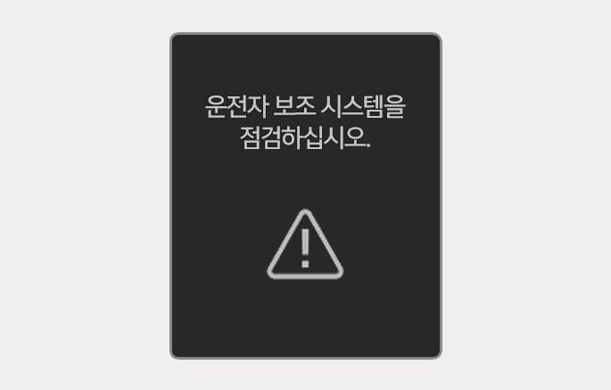

하이빔 보조 작동 시 제한사항
차량 조작의 책임은 운전자에게 있습니다. 하이빔 보조에만 의존하지 말고 도로 상황을 직접 확인하며 안전하게 운전하십시오.
하이빔 보조 기능에 이상이 발생하는 경우 당사 직영 하이테크센터나 블루핸즈에서 차량을 점검하십시오.
-
기능 이상 발생 시 클러스터에 경고문과 경고등(
X )이 표시됩니다. -
클러스터의 유틸리티 정보 뷰에서 발생한 경고 내용을 확인할 수 있습니다.

2C_CheckDrivingAssistWarning
주행 조건 및 주변 상황에 따라, 다음과 같은 경우 하이빔 보조가 정상적으로 작동하지 않을 수 있습니다.
-
마주 오는 차량 또는 선행 차량의 램프가 파손되었거나 감지 영역을 벗어나 있는 경우
-
마주 오는 차량 또는 선행 차량의 램프가 먼지, 눈 등으로 덮여 있거나 물에 젖어 있는 경우
-
짙은 배기가스, 연기, 안개, 눈, 물보라, 눈보라, 김 서림 등 공기 중 장애물로 인해 마주 오는 차량 또는 선행 차량의 램프가 감지되지 않는 경우
-
마주 오는 차량이 전조등을 끄고 안개등을 켠 경우
-
전방에 자동차 전조등이나 미등과 유사한 형태의 광원이 있는 경우
-
전조등을 임의로 수리하거나 교체한 경우
-
전조등의 조사각이 올바르지 않을 경우
-
좁은 커브 길, 곡선 도로, 거친 도로, 오르막길 또는 내리막길을 주행하는 경우
-
교차로 또는 곡선 도로에서 전방 차량의 일부만 인식되는 경우
-
전방에 신호등, 반사 표지판, 발광 표지판 또는 도로 반사경이 있는 경우
-
전방에 임시로 설치된 반사체나 발광체가 있는 경우(공사 구간 등)
-
노면이 젖어 있거나 눈 또는 얼음으로 덮여 있는 등 도로 환경이 나쁜 경우
-
곡선 길 등에서 전방 차량이 갑자기 나타나는 경우
-
타이어가 손상되어 차체가 기울어 있거나 차량을 견인 중인 경우
-
하이빔 보조 기능이 정상적으로 작동하지 않는 경우 수동으로 상향등을 켜거나 끄십시오.
-
하이빔 보조 성능을 최적의 상태로 유지하기 위해서는 전방 카메라를 적절하게 관리해야 합니다.
-
전방 카메라의 관리에 대한 자세한 설명은 '전방 충돌방지 보조 (FCA)'에 수록된 안전 정보와 주의사항을 참고하십시오.
-
차량 시동 시 또는 전방 카메라 초기화 시 약 15초 동안 기능이 작동하지 않을 수 있습니다.